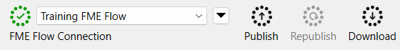
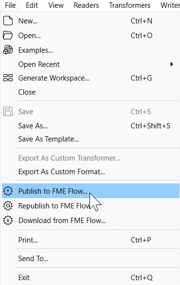
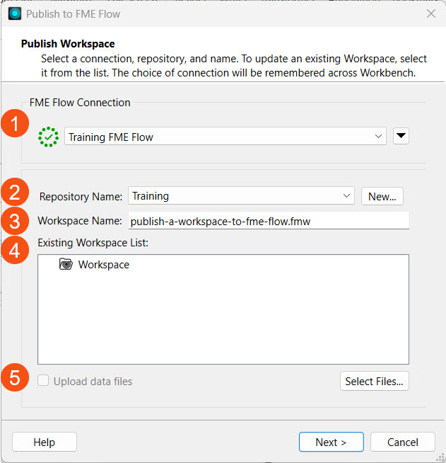
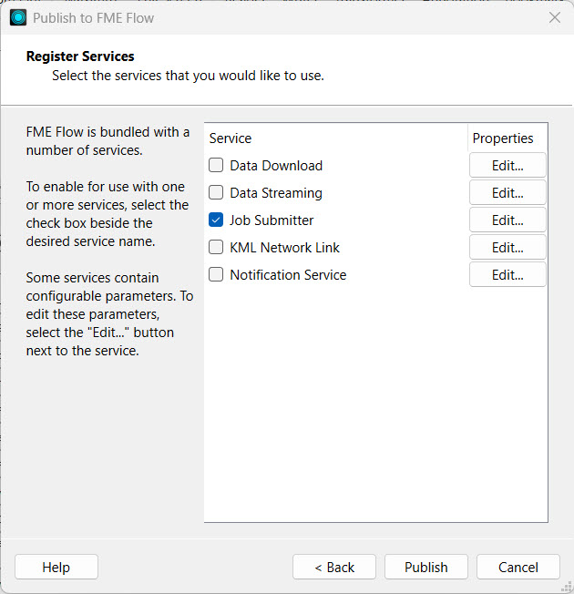
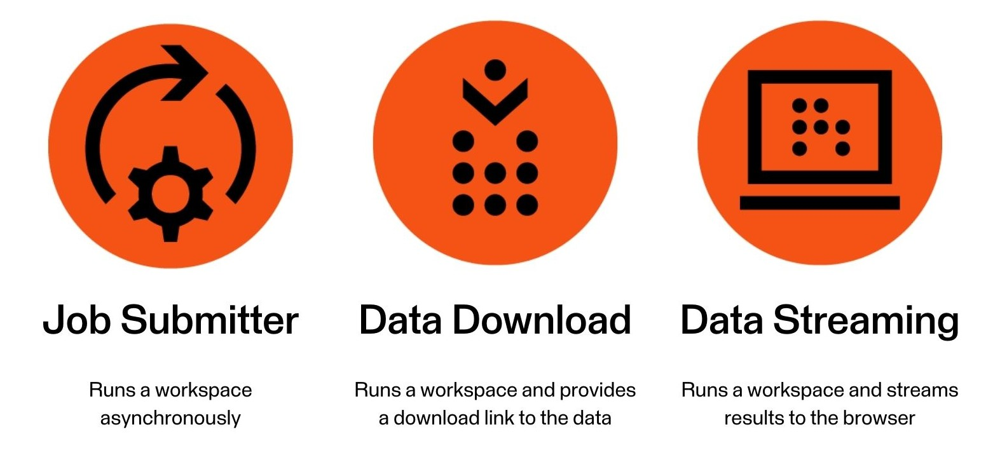
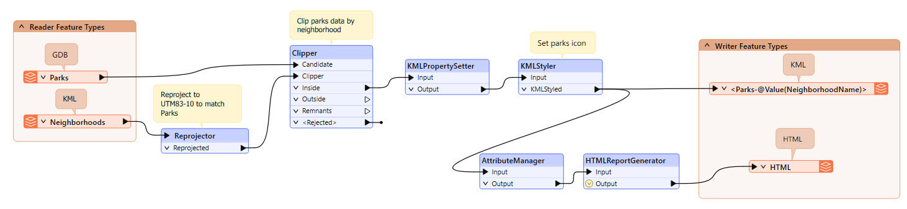
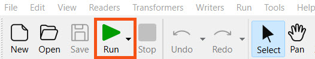
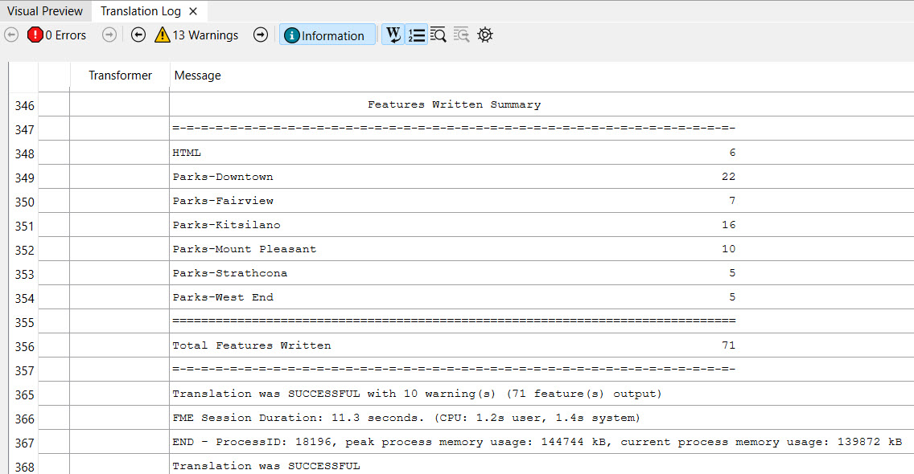
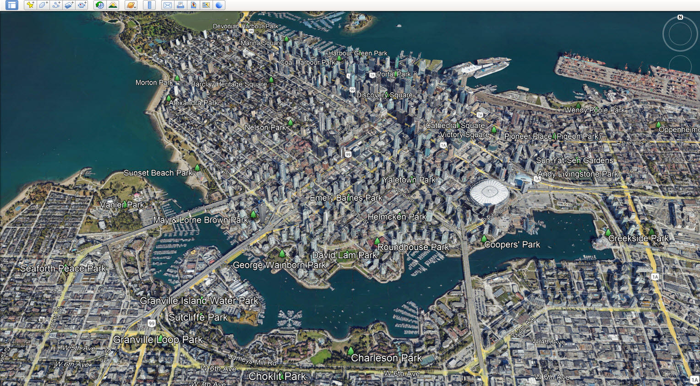
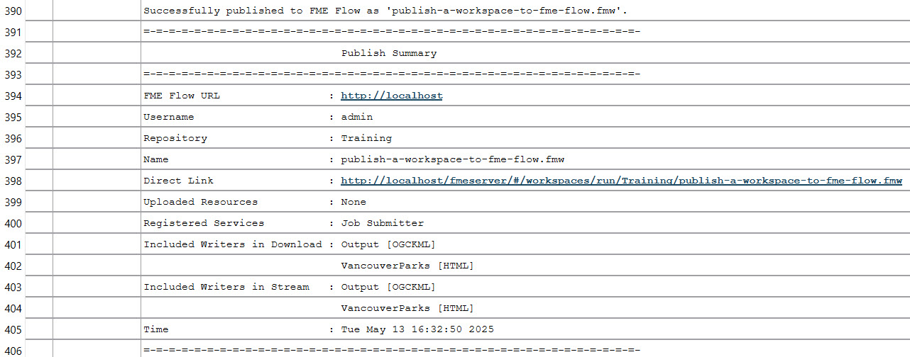

After completing this lesson, you’ll be able to:
In FME Workbench, you complete the publishing process to transfer workspaces to FME Flow using the publishing wizard. Click Publish in the toolbar or from File > Publish to FME Flow on the top menu to open the publishing wizard.


The first step of the publishing wizard appears. The settings are:
1. Select or create your FME Flow Connection. The options here are the same as those in the FME Flow Connection toolbar.
2. Select the repository to house your workspace. You may create a new one here, too. Repositories are like folders on FME Flow; they hold and organize workspaces and their related data. The Existing Workspace List will update with the workspaces already in your selected repository.
3. You have the option to change the workspace name. FME Flow will warn you if the workspace name already exists and ask if you'd like to overwrite the existing workspace.
4. The Existing Workspace List updates to show workspaces already in your chosen repository.
5. You also have the option to upload data files and select which files to upload. By default, FME uploads the data to the repository where the workspace resides. You will learn more about managing source data in Manage FME Flow Data and Connections.

If your workspace uses a Web or Database Connection, the next step allows you to select which connections to publish to FME Flow. Generally, if your connection is not already on FME Flow, you'll want to include it. You will learn more about managing connections on FME Flow in Manage FME Flow Data and Connections.
The last section prompts you to select the services to register the workspace.

The most common services are Data Download, Data Streaming, and Job Submitter, which are transformation services. Transformation services control how the workspace runs and how the written data is output.

The Job Submitter service allows FME Flow to run a workspace as-is, which is the closest thing to running a workspace in FME Workbench. Data is written out as specified by the workspace's writers and is not streamed or delivered in any other manner. The Data Download and Data Streaming services will be covered in the last two lessons of this course.
You may register a workspace with multiple services, and you will select which service to use when running the workspace on FME Flow. While publishing a workspace with no services is possible, it cannot run on FME Flow without registering it with a service, so you should always select at least one service. After publishing, you may also change the registered workspace services on FME Flow.
After you've configured all settings using the publishing wizard, clicking Publish transfers the workspace to FME Flow. The translation log in FME Workbench will provide information on whether publishing was successful. The Publish Summary denotes information about the workspace you just published and includes a direct link to open the workspace on FME Flow.

The option to republish a workspace to FME Flow appears after you publish the workspace once.

You use republish when you've made minor modifications to the workspace, such as adding a new transformer or changing Reader settings. You must publish those changes to FME Flow without modifying the original publishing settings. Republish uses the publish settings you previously used to publish the workspace to FME Flow without taking you through the publishing wizard. If you need to change any settings in the publishing wizard, such as changing the registered services, republish does not give you those options, and you must go through the entire publishing process.

Sven, a planning analyst, is an experienced FME Form user starting to set up his workflows on FME Flow to maximize the FME Platform's capabilities.
He wants to migrate a workspace that he frequently runs to FME Flow. The workspace reads Parks data from a geodatabase and Neighborhoods data as KML. The Parks are clipped to the neighborhoods, styled for KML, and written as a separate file for each neighborhood using a feature type fanout. Additionally, an HTML summary report is generated for the Parks data. Sven often shares this workspace with other FME users in his department, so having it on FME Flow will be handy, allowing multiple users to access it.
Keyhole Markup Language (KML): a spatial data format stored in XML, as originally defined by Keyhole, Inc, and now used by Google Earth and specified as an international standard of the Open Geospatial Consortium.
For this exercise, follow along with Sven's steps as he publishes the workspace from FME Workbench to FME Flow.
Sven opens the starting workspace (C:\FMEData\Workspaces\DeployWorkflowsWithFMEFlow\publish-a-workspace-to-fme-flow.fmw) in FME Workbench (2025.0.1 or later).

Sven runs the workspace by clicking the Run button to confirm it functions as expected.

You may receive an Unexpected Input dialog. You can ignore it and click OK; the translation will still complete successfully. For more information about this warning, see this blog post.
He checks the translation log to confirm that the data was written and the translation is successful.

The output KML Parks data is written to C:\FMEData\Output, and he opens the KML files in Google Earth.

Sven returns to FME Workbench. In the top toolbar, he confirms his FME Flow is connected and clicks Publish to begin the publishing process.

The publishing wizard's first part is selecting an FME Flow Connection. Sven's current connection is connected and ready to use, denoted by the green checkmark.
For the Repository Name, Sven clicks New... and creates a new Training repository to house his workspace.
Sven leaves the workspace name as the default. He could alter the name if he needed to.

Sven clicks next and registers the workspace with the Job Submitter service for now. Later, Sven will update the workspace and publish it again with the Data Download and Data Streaming services.

Sven clicks Publish to complete the publishing process.
Sven checks the translation log for any errors when publishing the workspace to FME Flow. Sven sees that publishing was successful and reviews the Publish Summary information.

Sven has successfully published his first workspace to FME Flow. Sven and his colleagues can now access and run this workspace on FME Flow, which he will do in the next lesson.